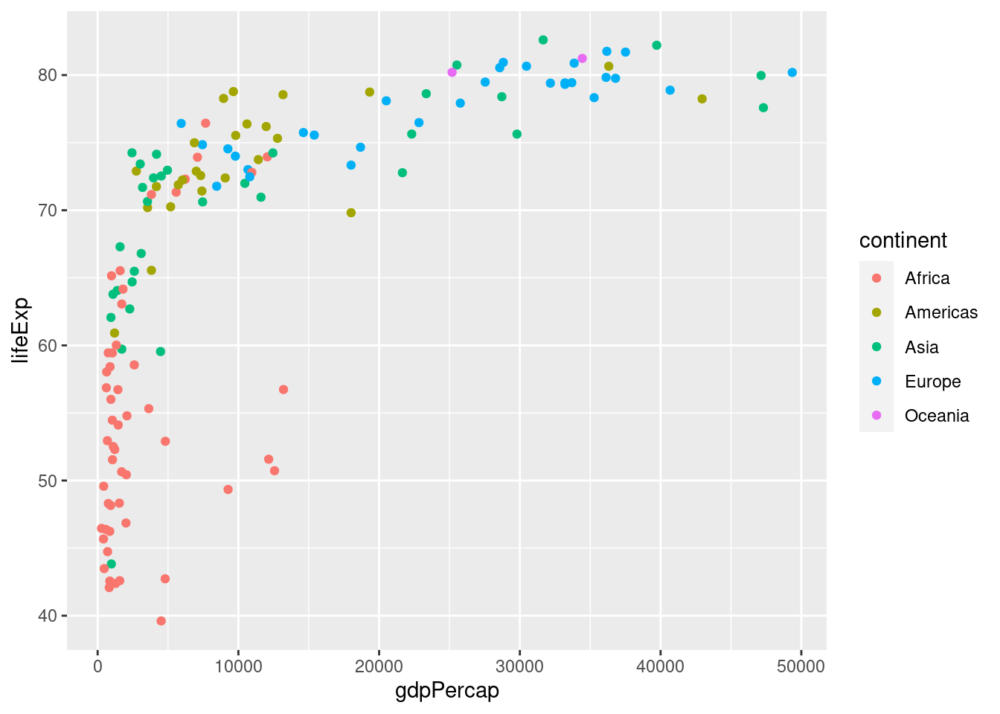
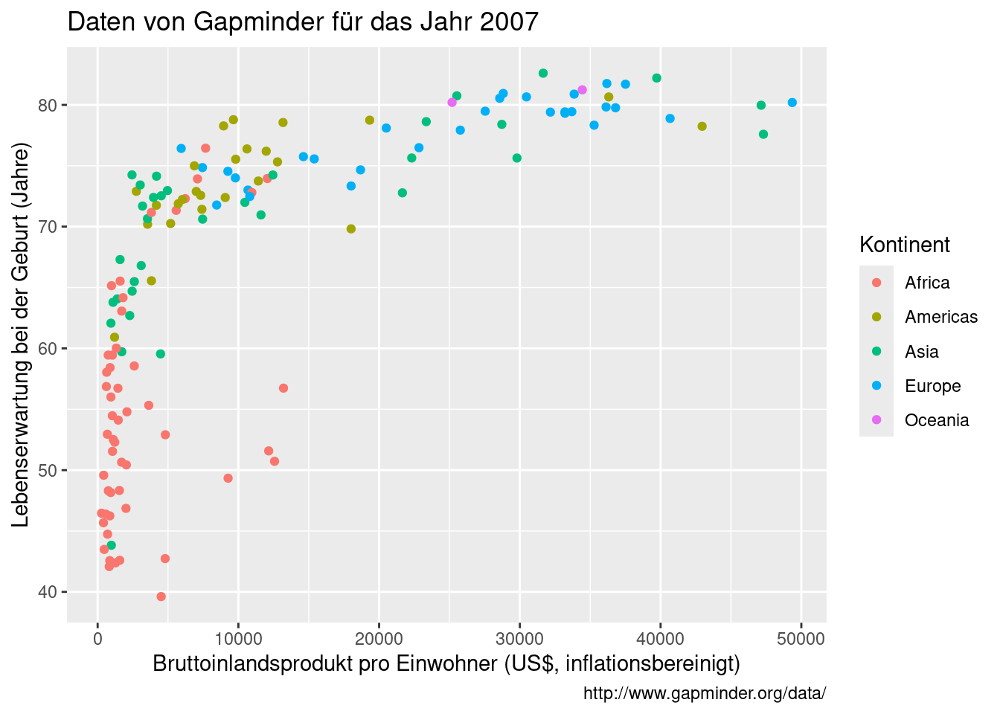
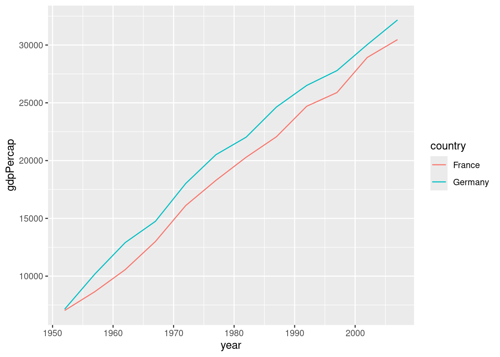
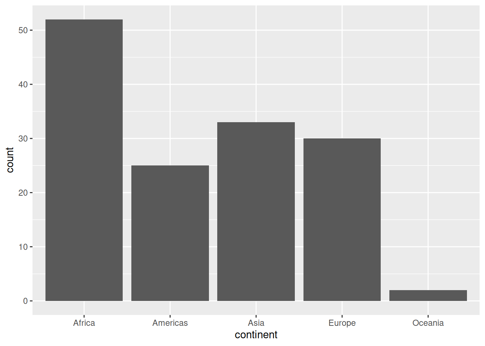
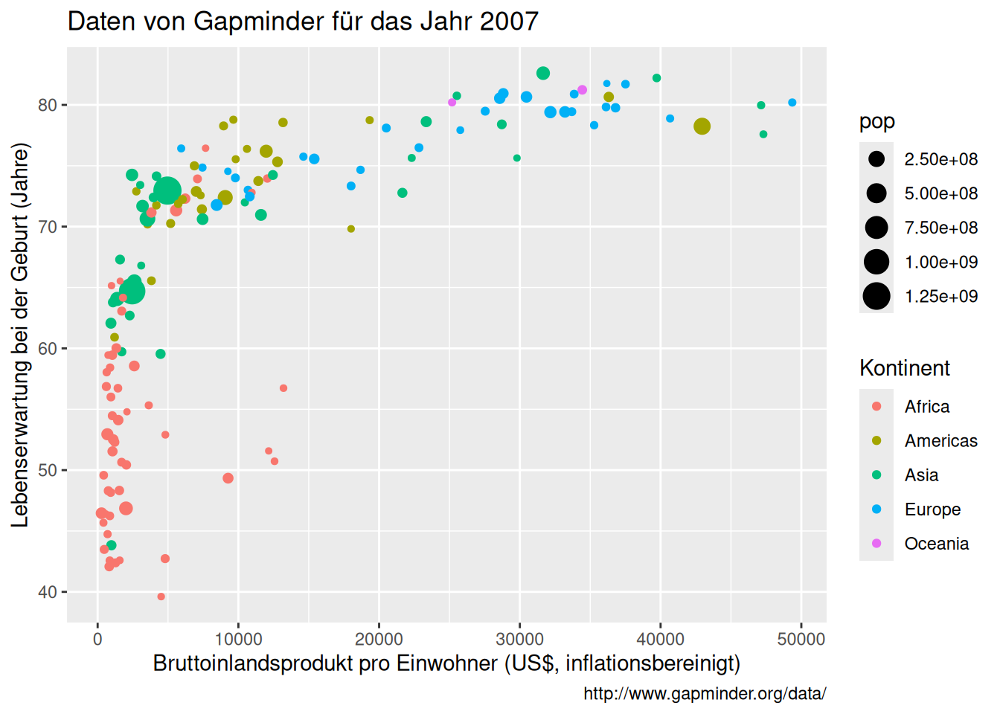

3 Einführung in die Darstellung von Daten
- Aufbau des Aufrufs der Funktion
ggplot()kennen - fünf wichtigste Grafiktypen kennen und einsetzten
3.1 Aufbau eines Darstellungsbefehls
Das Paket ggplot2 ist ein sehr mächtiges Visualisierungswerkzeug. Der Name steht für “the grammar of graphics”. Das bedeutet, dass man mithilfe von verschiedenen Funktion in ggplot2 seine Grafik Schritt für Schritt aufbaut, wie einen (grammatikalisch korrekten) Satz. In aller Kürze bedeutet das:
Eine statistische Grafik ist eine Zuordnung (
mapping) von Variablen in einem Datensatz (data) zu (ästhetischen) Attributen (aes) von geometrischen Objekten (geom).
Wir müssen also für die Darstellung von Daten R Folgendes mitteilen:
data: der Datensatz, der die Variablen enthält, die wir darstellen möchten.aes: (ästhetische) Attribute für die geometrischen Objekte, die dargestellt werden sollen. Diese Attribute sind, z.B. die x und y Koordinaten, Farbe, Form und Größe der geometrischen Objektegeom: geometrische Objekte, die dargestellt werden sollen, z.B. Punkte, Linien, Boxen, Balken/Säulen etc.
Wir laden zunächst die nötigen Bibliotheken.
library(ggplot2)
library(gapminder)Anschließend filtern wir den Datensatz gapminder, um nur die Daten aus dem Jahr 2007 zu behalten. Der Code filter(year == 2007) bedeutet, dass wir nur die Zeilen aus dem Datensatz behalten wollen, in denen in der Variable year 2007 steht.
gapminder2007 <- gapminder %>%
filter(year == 2007)Wir überzeugen uns davon, dass es geklappt hat 😄. Blättern Sie durch den Datensatz und überprüfen Sie die Werte in der Variablen year.
gapminder20073.2 Streudiagramm
Ein typischer Befehl zur Visualisierung eines Streudiagramms würde so aussehen:
ggplot(data = gapminder2007,
mapping = aes(x = gdpPercap, y = lifeExp, color = continent)) +
geom_point()
In Worten könnte man es vielleicht wie folgt umschreiben:
Nimm den Datensatz
gapminder2007(data = gapminder2007) undordne folgende Attribute zu:
- auf die x-Achse die Variable
gdpPercap(x = gdpPercap) (Bruttoinlandsprodukt) - auf die y-Achse die Variable
lifeExp(y = lifeExp) (Lebenserwartung) - färbe ein mithilfe der Variablen
continent(color = continent).
- auf die x-Achse die Variable
Stelle das Ganze als geometrisches Objekt Punkte dar (
geom_point())
Sie sehen, dass diese Zuordnungen klar nach einer Legende verlangen, die dann auch automatisch erstellt wird. Merke: color innerhalb der Funktion aes() erstellt die Legende automatisch.
Die Anweisungen zur Visualisierung in ggplot2 werden mit einem + verbunden. Man kann (und in diesem Fall soll) weitere Anweisungen geben. Z. B. sind die Beschriftungen der beiden Achsen so nichts sagend und müssen verbessert werden. Wir hängen mit einem +-Zeichen weitere Befehle hinzu:
ggplot(data = gapminder2007,
mapping = aes(x = gdpPercap, y = lifeExp, color = continent)) +
geom_point() +
labs(x = 'Bruttoinlandsprodukt pro Einwohner (US$, inflationsbereinigt)',
y = 'Lebenserwartung bei der Geburt (Jahre)',
color = 'Kontinent',
title = 'Daten von Gapminder für das Jahr 2007',
caption = 'http://www.gapminder.org/data/')
3.3 Weitere geoms
Das geom_point() produziert ein Streudiagramm auch XY-Diagramm (scatter plot). Weiter wichtige Grafiktypen sind
geom_line(): Liniengeom_bar(): Balken
3.4 Liniendiagramm
Es ergibt wenig Sinn, die obere Grafik mit Linien darzustellen. Allerdings eignen sich Linien ausgezeichnet, um einen zeitlichen Verlauf zu visualisieren. Daher filtern wir aus dem Datensatz gapminder die Zeitreihen für Frankreich und Deutschland heraus. Weil wir jetzt zwei Länder haben möchten, muss beim Filtern ein Vektor mit Ländernamen angegeben werden und statt == der Operator %in%. Wir werden später noch ausführlich auf diese Operatoren zurückkommen.
france_germany <- gapminder %>%
filter(country %in% c('France', 'Germany'))ggplot(data = france_germany,
mapping = aes(x = year, y = gdpPercap, color = country)) +
geom_line()
3.5 Balkendiagramm
Wie viele Einträge gibt es pro Kontinent? Das Balkendiagramm zählt für uns die Einträge im Datensatz zusammen. Es stellt also dieselben Daten dar, die eine Häufigkeitstabelle enthalten würde.
ggplot(data = gapminder2007,
mapping = aes(x = continent)) +
geom_bar()
3.6 Lesestoff
Kapitel 2.1 in Ismay and Kim (2021)
3.7 Aufgaben
3.7.1 Darstellung von großen Zahlen
Wir verändern die Grafik aus Section 3.2 so, dass die Symbole nach der Größe der Einwohnerzahl skaliert werden. Dazu benutzen wir eine neues Argument in der Funktion aes(size = pop):
ggplot(data = gapminder2007,
mapping = aes(x = gdpPercap, y = lifeExp, color = continent, size = pop)) +
geom_point() +
labs(x = 'Bruttoinlandsprodukt pro Einwohner (US$, inflationsbereinigt)',
y = 'Lebenserwartung bei der Geburt (Jahre)',
color = 'Kontinent',
title = 'Daten von Gapminder für das Jahr 2007',
caption = 'http://www.gapminder.org/data/')
Die Einwohnerzahlen sind sehr groß. Daher stellt R sie in der sogen. wissenschaftlichen Notation dar. Dabei steht z. B. e+08 für \(10^8\). Das heißt 2.5e+08 sind 250000000 Einwohner.
Beschriften Sie die Legende für die Größe der Symbole richtig, indem Sie size = 'Einwohnerzahl' in der Funktion labs hinzufügen.
3.7.2 Grafiken richtig beschriften
Bis auf die Grafik in Section 3.4 fehlen bei den Grafiken oben ordentliche Achsenbeschriftungen und Titel für die Legenden. Ergänzen Sie den Code entsprechend.
3.8 Ihre Arbeit einreichen
- Speichern Sie Ihr Notebook ab.
- Laden Sie Ihre .Rmd Datei in ILIAS hoch. Beachten Sie die Frist!
- Sie erhalten die Musterlösung nach dem Hochladen.